Note
Go to the end to download the full example code.
1.2 Diffraction Stacking: Detection#
This tutorial illustrates how to perform joint microseismic event detection and localisation using diffraction stacking.
We consider here a simple case of a homogeneous subsurface model and a set of point microseismic sources with various epicenters and various origin times. We consider only P-waves and single-component receivers for simplicity.
Traveltimes#
In a homogeneous medium traveltimes are computed analytically as
where \(d(\mathbf{x_r},\mathbf{x_s})\) is the distance between a source at \(\mathbf{x_s}\) and a receiver at \(\mathbf{x_r}\), and \(v\) is medium wave velocity (e.g. P-wave velocity \(v_p\)).
Waveforms#
The input data waveforms are computed with the help of PyLops Kirchhoff operator which uses Kirchhoff integral relation with high-frequency Green’s functions.
See more information here: https://pylops.readthedocs.io
Detection by diffraction stacking#
The basics of localisation by diffraction stacking are explained in 2.1 Diffraction Stacking: Localisation.
Microseismic data always contain scattered energy and noise which may result in multiple local maxima of the 4D imaging function. Therefore, a certain criterion is required to identify these local maxima as detections of microseismic events. For this purpose a joint detection and localisation algorithm was proposed in Anikiev at al. (2014). For every time \(t\) the maximum of the imaging function over all potential locations \(\mathbf{r}\) is evaluated:
The local maxima of the function \(F_t(t)\) (later on referred to as the maximum stack function or MSF) occur at the times linked to the origin times of microseismic events (Anikiev 2015). These local maxima can be found by triggering algorithms, usually used for automatic picking of seismic signal, for instance, the STA/LTA (Short Term Average / Long Term Average) method (e.g., Withers et al. 1998; Trnkoczy 2012). Local maxima are detected by measuring the ratio of average stack energy in short and long sliding time windows and comparing this ratio with the pre-defined STA/LTA threshold (Anikiev et al., 2014). For each zone triggered by the high STA/LTA once can determine a corresponding maximum (or peak) of the MSF an its time \(t_{peak}\).
For each determined peak, the origin time \(t_{est}\) of the corresponding event can be determined from \(t_{peak}\) as
where \(T_R(\mathbf{r}_{peak})\) is the traveltime to receiver \(R\) from \(\mathbf{r}_{peak}\) - the location determined from the maximum of \(F(\mathbf{r},t)\) at the time moment \(t_{peak}\):
References#
Anikiev, D. (2015). Joint detection, location and source mechanism determination of microseismic events (Doctoral dissertation). St. Petersburg State University. St. Petersburg. https://disser.spbu.ru/files/phdspsu2015/Anikiev_PhD_web_final.pdf
Anikiev, D., Valenta, J., Staněk, F. & Eisner, L. (2014). Joint location and source mechanism inversion of microseismic events: Benchmarking on seismicity induced by hydraulic fracturing. Geophysical Journal International, 198(1), 249–258. https://doi.org/10.1093/gji/ggu126
Trnkoczy, A. (2012). Understanding and parameter setting of STA/LTA trigger algorithm. In: Bormann, P. (Ed.), New Manual of Seismological Observatory Practice 2 (NMSOP-2), Potsdam: Deutsches GeoForschungsZentrum GFZ, 1-20. https://doi.org/10.2312/GFZ.NMSOP-2_IS_8.1
Withers, M., Aster, R., Young, C., Beiriger, J., Harris, M., Moore, S., & Trujillo, J. (1998). A comparison of select trigger algorithms for automated global seismic phase and event detection. Bulletin of the Seismological Society of America, 88(1), 95–106. https://doi.org/10.1785/bssa0880010095
Load all necessary packages#
import numpy as np
import matplotlib.pyplot as plt
import matplotlib.colors as mcolors
import cmcrameri.cm as cmc
from pylops.utils import dottest
from pylops.utils.wavelets import ricker
# Import modelling utils
from fracspy.modelling.kirchhoff import Kirchhoff
from fracspy.utils.synthutils import add_noise
# Import location utils
from fracspy.location import Location
from fracspy.location.utils import *
from fracspy.detection.stacking import *
# Import visualisation utils
from fracspy.visualisation.traceviz import traceimage
from fracspy.visualisation.eventimages import locimage3d
from fracspy.visualisation.plotting_support import *
# Deal with warnings (for a cleaner code)
import warnings
warnings.filterwarnings("ignore", category=FutureWarning)
warnings.filterwarnings("ignore", category=UserWarning)
# Track computation time
from time import time
Setup#
Here we setup the parameters of the velocity model, geometry of receivers and microseismic source for forward modelling
Velocity Model#
Velocity model shape: (50, 50, 50)
Receivers#
dr_xyz = 4*dx
grid_rx_locs = np.arange(dx, (dx*nx)-dx, dr_xyz)
grid_ry_locs = np.arange(dy, (dy*ny)-dy, dr_xyz)
rx, ry, rz = np.meshgrid(grid_rx_locs,
grid_ry_locs,
dz)
recs = np.vstack((rx.flatten(), ry.flatten(), rz.flatten()))
nr = recs.shape[1]
print(f"Receiver array shape: {recs.shape}")
Receiver array shape: (3, 144)
Microseismic sources#
Here we set up multiple sources at different locations and with different origin times
# number of sources
nsrc=3
# Declare empty arrays
isx, isy, isz = [np.zeros(nsrc).astype(int), np.zeros(nsrc).astype(int), np.zeros(nsrc).astype(int)]
sx, sy, sz = [np.zeros(nsrc), np.zeros(nsrc), np.zeros(nsrc)]
# Fill grid locations of events
isx[0], isy[0], isz[0] = [nx//4, ny//2, nz//2]
isx[1], isy[1], isz[1] = [(3*nx)//4, ny//2, (3*nz)//4]
isx[2], isy[2], isz[2] = [nx//2, ny//4, nz//4]
# Get real locations
for isrc in np.arange(nsrc):
sx[isrc], sy[isrc], sz[isrc] = isx[isrc]*dx, isy[isrc]*dy, isz[isrc]*dz
# Origin times in sec
ort = [0, 0.15, 0.40]
# Create source arrays in a loop, using different strengths for the sources
microseismic = []
for isrc in np.arange(nsrc):
micro = np.zeros((nx, ny, nz))
if isrc == 0:
micro[isx[isrc], isy[isrc], isz[isrc]] = 1.0
elif isrc == 1:
micro[isx[isrc], isy[isrc], isz[isrc]] = 0.3
elif isrc == 2:
micro[isx[isrc], isy[isrc], isz[isrc]] = 0.9
microseismic.append(micro)
Generate synthetic data#
Generating synthetic data...
Create signal wavelet#
Initialise operator#
Check operator with dottest#
This test can help to detect errors in the operator implementation.
Dot test passed, v^H(Opu)=-16029.135779777966 - u^H(Op^Hv)=-16029.135779777964
Forward modelling#
Apply operator to model data for each event, shift by origin time and store in frwddata
frwddata = np.zeros((nr, nt))
for isrc in np.arange(nsrc):
frwddata_src = (Op @ microseismic[isrc].flatten().squeeze()).reshape(nr, nt)
frwddata += np.roll(frwddata_src, shift=int(ort[isrc]/dt), axis=1)
# Contaminate data with white noise
# """""""""""""""""""""""""""""""""
# Fix the seed for reproducibility
seed=1
# Fix SNR levels
snr_wn=1
# Fix traces for ringy noise
trind_rn = np.arange(1,nr,11)
# Add white noise of defined SNR
frwddata_wn = add_noise(frwddata,noise_type="white",snr=snr_wn,seed=seed)
# Show consumed time
end_time = time()
print(f"Computation time: {end_time - start_time} seconds")
Computation time: 10.008696556091309 seconds
Plot input data#
# Plot modelled data
# """"""""""""""""""
fig, ax = traceimage(frwddata, climQ=99.99)
ax.set_title('Noise-free modelled data')
fig = ax.get_figure()
fig.set_size_inches(10, 3) # set size in inches
Plot modelled data contaminated with white noise#
fig, ax = traceimage(frwddata_wn, climQ=99.99)
ax.set_title(f"Modelled data contaminated with white noise of SNR={snr_wn}")
fig = ax.get_figure()
fig.set_size_inches(10, 3) # set size in inches
Plot receiver geometry#
fig, ax = plt.subplots(1, 1)
fig.set_size_inches(8, 8) # set size in inches
ax.set_aspect('equal')
ax.scatter(recs[0],recs[1])
for isrc in np.arange(nsrc):
ax.scatter(sx[isrc],sy[isrc], marker='*')
ax.set_title('Receiver Geometry: map view')
ax.legend(['Receivers', 'Source 1', 'Source 2', 'Source 3'],loc='upper right')
_ = ax.set_xlabel('x')
_ = ax.set_ylabel('y')
Prepare for location#
Define location class using grid vectors#
Use the original velocity model grid for location (the grid can be different)
Prepare traveltimes#
Traveltime array shape: (144, 50, 50, 50)
Localisation by diffraction stacking for clean data#
Here we apply diffraction stacking algorithm to clean noise-free data, get the image volume and determine location from the maximum of this volume in order to show that it is still possible despite multiple records.
Perform squared-value diffraction stacking#
Squared-value diffraction stacking applied to clean data...
Computation time: 30.452024221420288 seconds
Localisation by diffraction stacking for noise-contaminated data#
Here we apply diffraction stacking to data contaminated with noise
Perform squared-value diffraction stacking#
start_time = time()
print("Squared-value diffraction stacking applied to noisy data...")
dstacked_sqd_wn, hc_sqd_wn = L.apply(frwddata_wn,
kind="diffstack",
x=gx, y=gy, z=gz,
tt=tt, dt=dt, nforhc=10,
stack_type="squared")
end_time = time()
print(f"Computation time: {end_time - start_time} seconds")
Squared-value diffraction stacking applied to noisy data...
Computation time: 30.444655179977417 seconds
Visualisation of location results#
Here we visualise the slices of the resulting image volume
# Get the spatial limits for plotting
xlim = (min(gx),max(gx))
ylim = (min(gy),max(gy))
zlim = (min(gz),max(gz))
# Define colormap
cmap='cmc.bilbao_r'
# Define legend
crosslegend=('Intersect plane (True location: event 1)','Determined location')
# Print true locations
print('-------------------------------------------------------')
for isrc in np.arange(nsrc):
print('True event {:d} hypocentre:\n[{:.2f} m, {:.2f} m, {:.2f} m]'.format(isrc+1,sx[isrc], sy[isrc], sz[isrc]))
-------------------------------------------------------
True event 1 hypocentre:
[48.00 m, 100.00 m, 100.00 m]
True event 2 hypocentre:
[148.00 m, 100.00 m, 148.00 m]
True event 3 hypocentre:
[100.00 m, 48.00 m, 48.00 m]
Plot resulting image volumes from diffraction stacking#
Note the spots related to other events
# Results of application to clean data:
fig,axs = locimage3d(dstacked_sqd,
cmap=cmap,
title='Location with squared-value diffraction stacking:\nclean data',
x0=isx[0], y0=isy[0], z0=isz[0],
secondcrossloc=hc_sqd,
crosslegend=crosslegend,
xlim=xlim,ylim=ylim,zlim=zlim)
print('-------------------------------------------------------')
print('Event hypocentre from squared-value diffraction stacking for clean data:\n[{:.2f} m, {:.2f} m, {:.2f} m]'.format(*np.multiply(hc_sqd,[dx, dy, dz])))
print('Location error:\n[{:.2f} m, {:.2f} m, {:.2f} m]'.format(*get_location_misfit([isx[0], isy[0], isz[0]], hc_sqd, [dx, dy, dz])))
# Results of application to data contaminated with white noise:
fig,axs = locimage3d(dstacked_sqd_wn,
cmap=cmap,
title=f"Location with squared-value diffraction stacking:\ndata contaminated with white noise of SNR={snr_wn}",
x0=isx[0], y0=isy[0], z0=isz[0],
secondcrossloc=hc_sqd_wn,
crosslegend=crosslegend,
xlim=xlim,ylim=ylim,zlim=zlim)
print('-------------------------------------------------------')
print('Event hypocentre from squared-value diffraction stacking for data contaminated with white noise of SNR={:.1f}:\n[{:.2f} m, {:.2f} m, {:.2f} m]'.format(snr_wn,*np.multiply(hc_sqd_wn,[dx, dy, dz])))
print('Location error:\n[{:.2f} m, {:.2f} m, {:.2f} m]'.format(*get_location_misfit([isx[0], isy[0], isz[0]], hc_sqd_wn, [dx, dy, dz])))
print('-------------------------------------------------------')
- 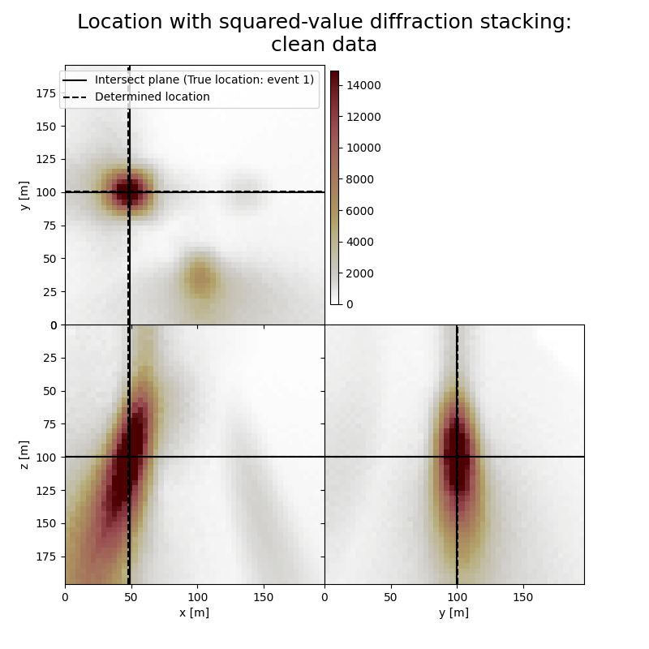
- 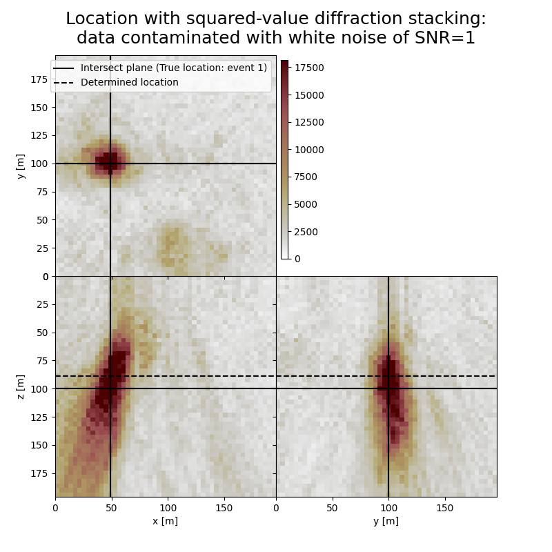
-------------------------------------------------------
Event hypocentre from squared-value diffraction stacking for clean data:
[46.80 m, 100.40 m, 100.00 m]
Location error:
[1.20 m, -0.40 m, 0.00 m]
-------------------------------------------------------
Event hypocentre from squared-value diffraction stacking for data contaminated with white noise of SNR=1.0:
[48.00 m, 99.60 m, 88.80 m]
Location error:
[0.00 m, 0.40 m, 11.20 m]
-------------------------------------------------------
Diffraction stacking detection for clean data#
Here we apply diffraction stacking detection algorithm to noise-free data
Define detection parameters#
Perform detection using squared-value diffraction stacking#
start_time = time()
print("Squared-value diffraction stacking detection applied to clean data...")
(msf_sqd,
slf_sqd,
idp_sqd,
eot_sqd,
ds_full_sqd) = diffstack_detect(data = frwddata,
x = gx,
y = gy,
z = gz,
tt = tt,
dt = dt,
stw = stw,
ltw = ltw,
gtw = gtw,
slt=slt,
stack_type="squared")
end_time = time()
print(f"Computation time: {end_time - start_time} seconds")
Squared-value diffraction stacking detection applied to clean data...
Computation time: 30.12967300415039 seconds
Compare the detection results with the actual origin times#
print('-------------------------------------------------------')
print('Comparison of origin times for squared-value diffraction stacking detection applied to clean data:')
for isrc in np.arange(nsrc):
print('Event {:d}'.format(isrc+1))
print('True origin time: {:.3f} s'.format(ort[isrc]))
print('Determined origin time: {:.3f} s'.format(eot_sqd[isrc]))
print('Origin time estimation error: {:.3f} s'.format(ort[isrc]-eot_sqd[isrc]))
print('-------------------------------------------------------')
# for isrc in np.arange(nsrc):
# print('True event {:d} hypocenter:\n[{:.2f} m, {:.2f} m, {:.2f} m]'.format(isrc+1,sx[isrc], sy[isrc], sz[isrc]))
#print('Event hypocenter from semblance-based diffraction stacking with sliding window of {:d} samples for data contaminated with spiky noise of SNR={:.1f}:\n[{:.2f} m, {:.2f} m, {:.2f} m]'.format(swsize,snr_sn,*np.multiply(hc_semb_swin_sn,[dx, dy, dz])))
#print('Location error:\n[{:.2f} m, {:.2f} m, {:.2f} m]'.format(*get_location_misfit([isx, isy, isz], hc_semb_swin_sn, [dx, dy, dz])))
-------------------------------------------------------
Comparison of origin times for squared-value diffraction stacking detection applied to clean data:
Event 1
True origin time: 0.000 s
Determined origin time: -0.000 s
Origin time estimation error: 0.000 s
Event 2
True origin time: 0.150 s
Determined origin time: 0.148 s
Origin time estimation error: 0.002 s
Event 3
True origin time: 0.400 s
Determined origin time: 0.400 s
Origin time estimation error: 0.000 s
-------------------------------------------------------
Diffraction stacking detection for noisy data#
Here we apply diffraction stacking detection algorithms to noisy data
Perform detection using squared-value diffraction stacking#
start_time = time()
print("Squared-value diffraction stacking detection applied to noisy data...")
(msf_sqd_wn,
slf_sqd_wn,
idp_sqd_wn,
eot_sqd_wn,
ds_full_sqd_wn) = diffstack_detect(data = frwddata_wn,
x = gx,
y = gy,
z = gz,
tt = tt,
dt = dt,
stw = stw,
ltw = ltw,
gtw = gtw,
slt=slt,
stack_type="squared")
end_time = time()
print(f"Computation time: {end_time - start_time} seconds")
Squared-value diffraction stacking detection applied to noisy data...
Computation time: 30.128106594085693 seconds
Perform detection using semblance-based diffraction stacking#
# Define sliding window for semblance as two periods of the signal
swsize = int(2/f0/dt)
print(f"Sliding window size in samples: {swsize}")
start_time = time()
print("Semblance-based diffraction stacking detection applied to noisy data...")
(msf_sem_wn,
slf_sem_wn,
idp_sem_wn,
eot_sem_wn,
ds_full_sem_wn) = diffstack_detect(data=frwddata_wn,
x = gx,
y = gy,
z = gz,
tt = tt,
dt = dt,
stw = stw,
ltw = ltw,
gtw = gtw,
slt=slt,
stack_type="semblance",
swsize=swsize)
end_time = time()
print(f"Computation time: {end_time - start_time} seconds")
Sliding window size in samples: 25
Semblance-based diffraction stacking detection applied to noisy data...
Computation time: 33.23863482475281 seconds
Compare the detection results with the actual origin times#
print('-------------------------------------------------------')
print('Comparison of origin times for squared-value diffraction stacking detection applied to noisy data:')
for isrc in np.arange(nsrc):
print('Event {:d}'.format(isrc+1))
print('True origin time: {:.3f} s'.format(ort[isrc]))
print('Determined origin time: {:.3f} s'.format(eot_sqd_wn[isrc]))
print('Origin time estimation error: {:.3f} s'.format(ort[isrc]-eot_sqd_wn[isrc]))
print('-------------------------------------------------------')
print('Comparison of origin times for semblance-based diffraction stacking detection applied to noisy data:')
for isrc in np.arange(nsrc):
print('Event {:d}'.format(isrc+1))
print('True origin time: {:.3f} s'.format(ort[isrc]))
print('Determined origin time: {:.3f} s'.format(eot_sem_wn[isrc]))
print('Origin time estimation error: {:.3f} s'.format(ort[isrc]-eot_sem_wn[isrc]))
print('-------------------------------------------------------')
-------------------------------------------------------
Comparison of origin times for squared-value diffraction stacking detection applied to noisy data:
Event 1
True origin time: 0.000 s
Determined origin time: 0.008 s
Origin time estimation error: -0.008 s
Event 2
True origin time: 0.150 s
Determined origin time: 0.144 s
Origin time estimation error: 0.006 s
Event 3
True origin time: 0.400 s
Determined origin time: 0.395 s
Origin time estimation error: 0.005 s
-------------------------------------------------------
Comparison of origin times for semblance-based diffraction stacking detection applied to noisy data:
Event 1
True origin time: 0.000 s
Determined origin time: 0.004 s
Origin time estimation error: -0.004 s
Event 2
True origin time: 0.150 s
Determined origin time: 0.184 s
Origin time estimation error: -0.034 s
Event 3
True origin time: 0.400 s
Determined origin time: 0.404 s
Origin time estimation error: -0.004 s
-------------------------------------------------------
Visualisation of detection results#
Here we visualise the detection curves
# Make time vector
t = np.arange(0, nt * dt, dt)
# Create a new colormap with two distinct colors from batlow colorsheme
cmap = mcolors.ListedColormap([cmc.batlow(80), cmc.batlow(225)], name="two_color_batlow")
#cmap = None
fig,axs = detection_curves(msf=msf_sqd,
slf=slf_sqd,
slt=slt,
idp=idp_sqd,
t=t,
title='Detection for clean data based on squared-value diffraction stacking',
titlefontsize=12,
cmap=cmap)
fig,axs = detection_curves(msf=msf_sqd_wn,
slf=slf_sqd_wn,
slt=slt,
idp=idp_sqd_wn,
t=t,
title='Detection for noisy data based on squared-value diffraction stacking',
titlefontsize=12,
cmap=cmap)
fig,axs = detection_curves(msf=msf_sem_wn,
slf=slf_sem_wn,
slt=slt,
idp=idp_sem_wn,
t=t,
title='Detection for noisy data based on semblance-based diffraction stacking',
titlefontsize=12,
cmap=cmap)
- 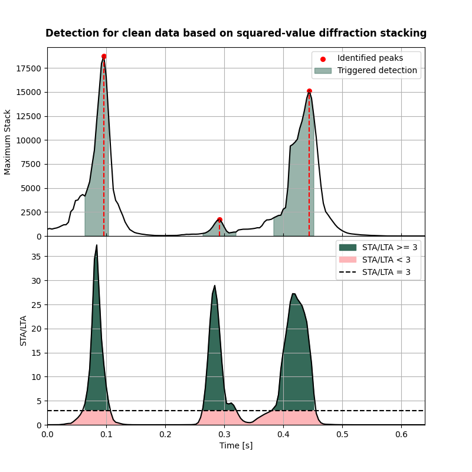
- 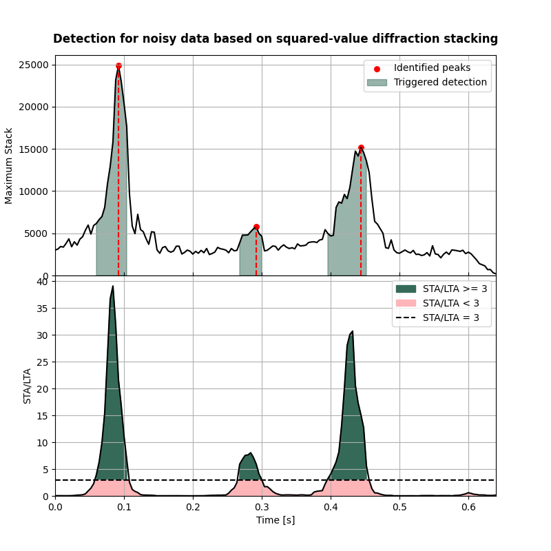
- 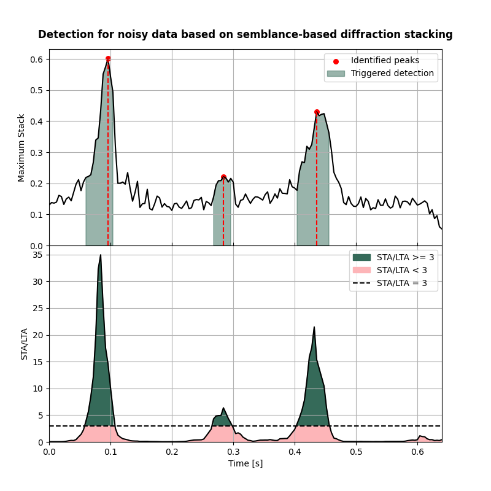
Localisation of detected events#
Here we determine locations of detected events
nforhc = 10
hc_sqd = []
hc_sqd_wn = []
hc_sem_wn = []
ihc_sqd = []
ihc_sqd_wn = []
ihc_sem_wn = []
ds_im_vol_sqd = []
ds_im_vol_sqd_wn = []
ds_im_vol_sem_wn = []
for isrc in np.arange(nsrc):
ds_im_vol = np.squeeze(ds_full_sqd[idp_sqd[isrc],:,:,:])
ihc, _ = get_max_locs(ds_im_vol, n_max=nforhc, rem_edge=False)
ihc_sqd.append(ihc)
hc_sqd.append(np.multiply(ihc,[dx, dy, dz]))
ds_im_vol_sqd.append(ds_im_vol)
ds_im_vol = np.squeeze(ds_full_sqd_wn[idp_sqd_wn[isrc],:,:,:])
ihc, _ = get_max_locs(ds_im_vol, n_max=nforhc, rem_edge=False)
ihc_sqd_wn.append(ihc)
hc_sqd_wn.append(np.multiply(ihc,[dx, dy, dz]))
ds_im_vol_sqd_wn.append(ds_im_vol)
ds_im_vol = np.squeeze(ds_full_sem_wn[idp_sem_wn[isrc],:,:,:])
ihc, _ = get_max_locs(ds_im_vol, n_max=nforhc, rem_edge=False)
ihc_sem_wn.append(ihc)
hc_sem_wn.append(np.multiply(ihc,[dx, dy, dz]))
ds_im_vol_sem_wn.append(ds_im_vol)
Compare the location results with the actual hypocentres#
print('-------------------------------------------------------')
print('Comparison of hypocentres for squared-value diffraction stacking detection applied to clean data:')
for isrc in np.arange(nsrc):
print('-------------------------------------------------------')
print('Event {:d}'.format(isrc+1))
print('True hypocentre:\n[{:.2f} m, {:.2f} m, {:.2f} m]'.format(sx[isrc], sy[isrc], sz[isrc]))
print('Determined hypocentre:\n[{:.2f} m, {:.2f} m, {:.2f} m]'.format(hc_sqd[isrc][0], hc_sqd[isrc][1], hc_sqd[isrc][2]))
print('Hypocentre estimation error:\n[{:.2f} m, {:.2f} m, {:.2f} m]'.format(sx[isrc]-hc_sqd[isrc][0], sy[isrc]-hc_sqd[isrc][1], sz[isrc]-hc_sqd[isrc][2]))
print('-------------------------------------------------------')
print('Comparison of hypocentres for squared-value diffraction stacking detection applied to noisy data:')
for isrc in np.arange(nsrc):
print('-------------------------------------------------------')
print('Event {:d}'.format(isrc+1))
print('True hypocentre:\n[{:.2f} m, {:.2f} m, {:.2f} m]'.format(sx[isrc], sy[isrc], sz[isrc]))
print('Determined hypocentre:\n[{:.2f} m, {:.2f} m, {:.2f} m]'.format(hc_sqd_wn[isrc][0], hc_sqd_wn[isrc][1], hc_sqd_wn[isrc][2]))
print('Hypocentre estimation error:\n[{:.2f} m, {:.2f} m, {:.2f} m]'.format(sx[isrc]-hc_sqd_wn[isrc][0], sy[isrc]-hc_sqd_wn[isrc][1], sz[isrc]-hc_sqd_wn[isrc][2]))
print('-------------------------------------------------------')
print('Comparison of hypocentres for semblance-based diffraction stacking detection applied to noisy data:')
for isrc in np.arange(nsrc):
print('-------------------------------------------------------')
print('Event {:d}'.format(isrc+1))
print('True hypocentre:\n[{:.2f} m, {:.2f} m, {:.2f} m]'.format(sx[isrc], sy[isrc], sz[isrc]))
print('Determined hypocentre:\n[{:.2f} m, {:.2f} m, {:.2f} m]'.format(hc_sem_wn[isrc][0], hc_sem_wn[isrc][1], hc_sem_wn[isrc][2]))
print('Hypocentre estimation error:\n[{:.2f} m, {:.2f} m, {:.2f} m]'.format(sx[isrc]-hc_sem_wn[isrc][0], sy[isrc]-hc_sem_wn[isrc][1], sz[isrc]-hc_sem_wn[isrc][2]))
print('-------------------------------------------------------')
-------------------------------------------------------
Comparison of hypocentres for squared-value diffraction stacking detection applied to clean data:
-------------------------------------------------------
Event 1
True hypocentre:
[48.00 m, 100.00 m, 100.00 m]
Determined hypocentre:
[46.80 m, 100.80 m, 102.40 m]
Hypocentre estimation error:
[1.20 m, -0.80 m, -2.40 m]
-------------------------------------------------------
Event 2
True hypocentre:
[148.00 m, 100.00 m, 148.00 m]
Determined hypocentre:
[149.20 m, 100.00 m, 153.20 m]
Hypocentre estimation error:
[-1.20 m, 0.00 m, -5.20 m]
-------------------------------------------------------
Event 3
True hypocentre:
[100.00 m, 48.00 m, 48.00 m]
Determined hypocentre:
[100.40 m, 47.60 m, 48.40 m]
Hypocentre estimation error:
[-0.40 m, 0.40 m, -0.40 m]
-------------------------------------------------------
Comparison of hypocentres for squared-value diffraction stacking detection applied to noisy data:
-------------------------------------------------------
Event 1
True hypocentre:
[48.00 m, 100.00 m, 100.00 m]
Determined hypocentre:
[48.00 m, 99.60 m, 88.00 m]
Hypocentre estimation error:
[0.00 m, 0.40 m, 12.00 m]
-------------------------------------------------------
Event 2
True hypocentre:
[148.00 m, 100.00 m, 148.00 m]
Determined hypocentre:
[151.60 m, 111.60 m, 164.80 m]
Hypocentre estimation error:
[-3.60 m, -11.60 m, -16.80 m]
-------------------------------------------------------
Event 3
True hypocentre:
[100.00 m, 48.00 m, 48.00 m]
Determined hypocentre:
[100.00 m, 44.40 m, 52.00 m]
Hypocentre estimation error:
[0.00 m, 3.60 m, -4.00 m]
-------------------------------------------------------
Comparison of hypocentres for semblance-based diffraction stacking detection applied to noisy data:
-------------------------------------------------------
Event 1
True hypocentre:
[48.00 m, 100.00 m, 100.00 m]
Determined hypocentre:
[48.80 m, 101.20 m, 98.40 m]
Hypocentre estimation error:
[-0.80 m, -1.20 m, 1.60 m]
-------------------------------------------------------
Event 2
True hypocentre:
[148.00 m, 100.00 m, 148.00 m]
Determined hypocentre:
[146.80 m, 106.00 m, 121.60 m]
Hypocentre estimation error:
[1.20 m, -6.00 m, 26.40 m]
-------------------------------------------------------
Event 3
True hypocentre:
[100.00 m, 48.00 m, 48.00 m]
Determined hypocentre:
[98.80 m, 47.60 m, 34.40 m]
Hypocentre estimation error:
[1.20 m, 0.40 m, 13.60 m]
-------------------------------------------------------
Visualisation of location results for all events#
Here we visualise the slices of the resulting image volume for all events
# Get the spatial limits for plotting
xlim = (min(gx),max(gx))
ylim = (min(gy),max(gy))
zlim = (min(gz),max(gz))
# Define colormap
cmap_loc='cmc.bilbao_r'
for isrc in np.arange(nsrc):
# Define legend
crosslegend=(f"Intersect plane (True location: event {isrc+1})",'Determined location')
# Results of application of squared-value to clean data:
fig,axs = locimage3d(ds_im_vol_sqd[isrc],
cmap=cmap_loc,
x0=isx[isrc], y0=isy[isrc], z0=isz[isrc],
secondcrossloc=ihc_sqd[isrc],
crosslegend=crosslegend,
xlim=xlim,ylim=ylim,zlim=zlim)
fig.suptitle(f"Location of event {isrc+1} with squared-value diffraction stacking: clean data")
# Results of application of squared-value to noisy data:
fig,axs = locimage3d(ds_im_vol_sqd_wn[isrc],
cmap=cmap_loc,
x0=isx[isrc], y0=isy[isrc], z0=isz[isrc],
secondcrossloc=ihc_sqd_wn[isrc],
crosslegend=crosslegend,
xlim=xlim,ylim=ylim,zlim=zlim)
fig.suptitle(f"Location of event {isrc+1} with squared-value diffraction stacking: noisy data")
# Results of application of semblance-based to noisy data:
fig,axs = locimage3d(ds_im_vol_sem_wn[isrc],
cmap=cmap_loc,
x0=isx[isrc], y0=isy[isrc], z0=isz[isrc],
secondcrossloc=ihc_sem_wn[isrc],
crosslegend=crosslegend,
xlim=xlim,ylim=ylim,zlim=zlim)
fig.suptitle(f"Location of event {isrc+1} with semblance-based diffraction stacking: noisy data")
- 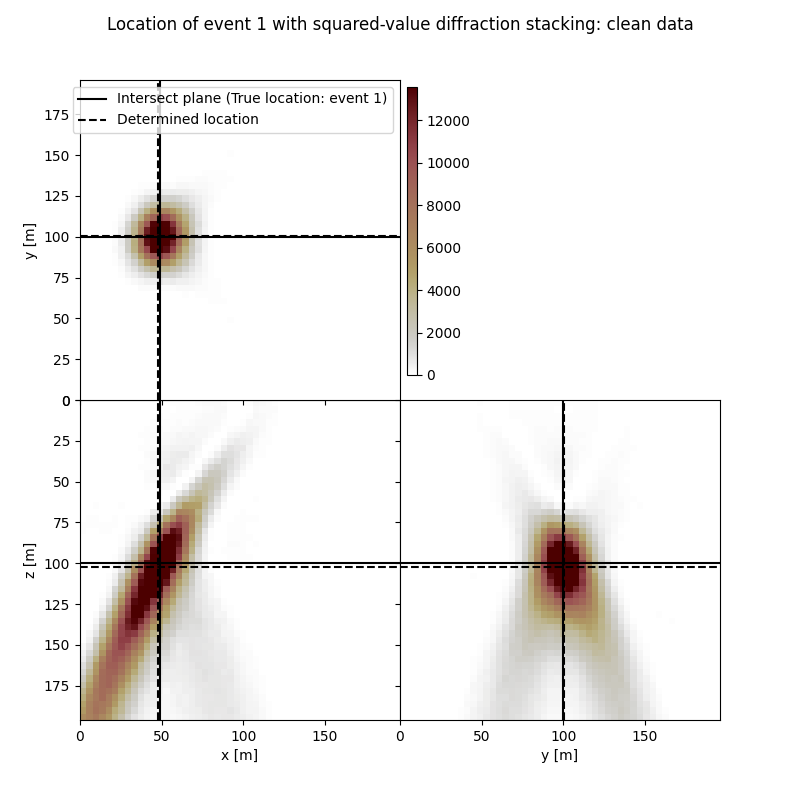
- 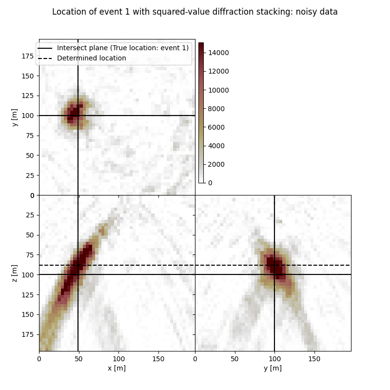
- 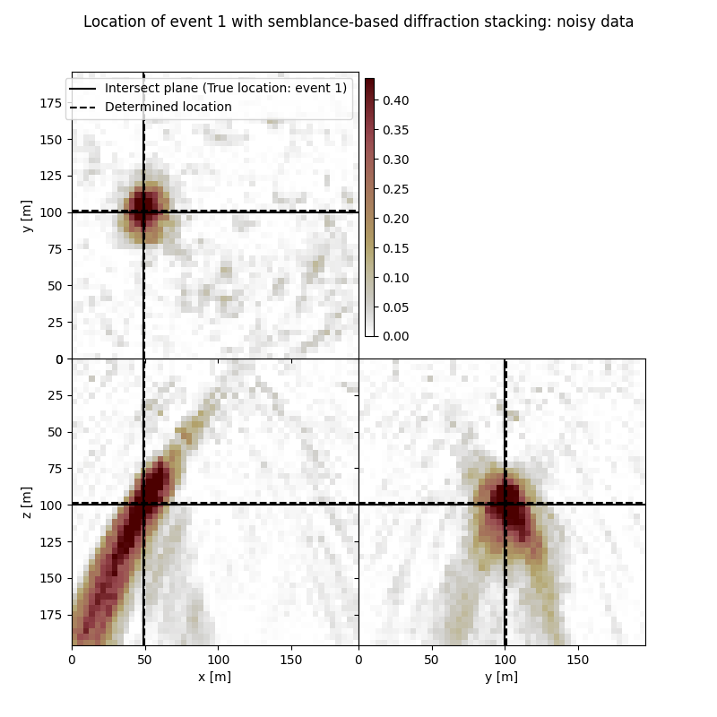
- 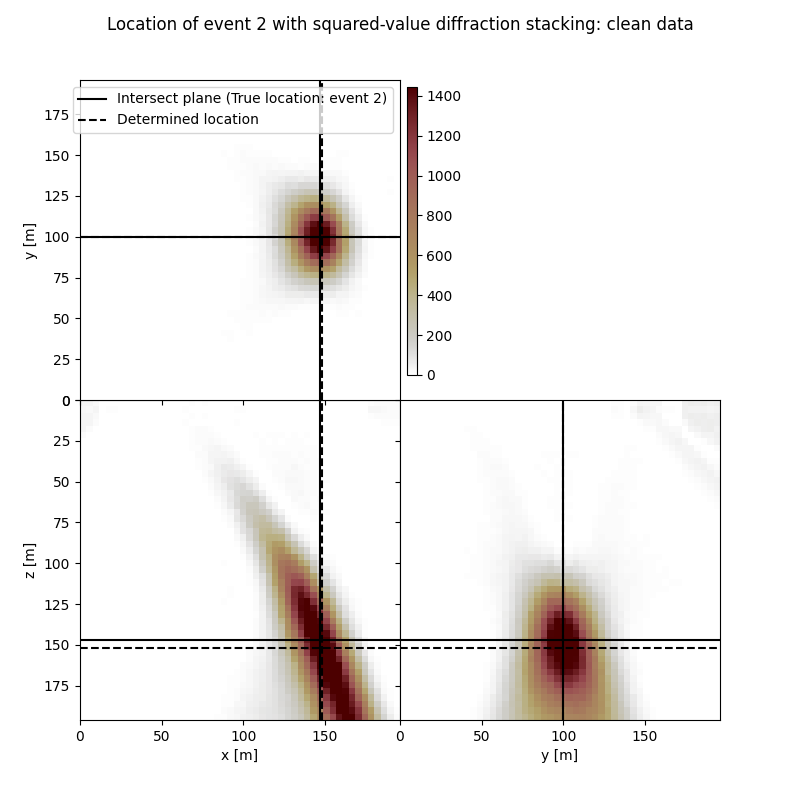
- 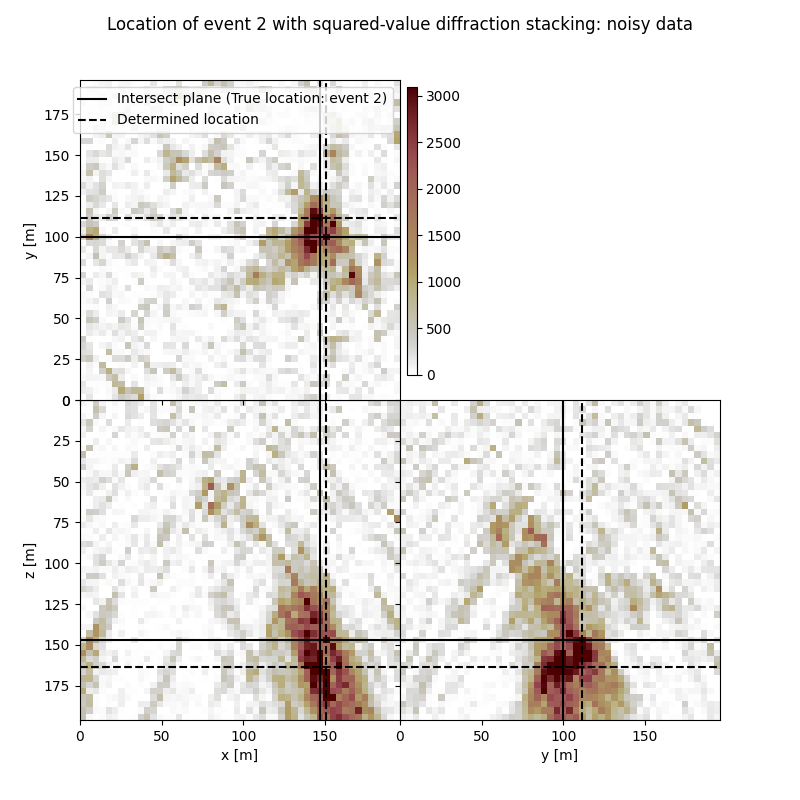
- 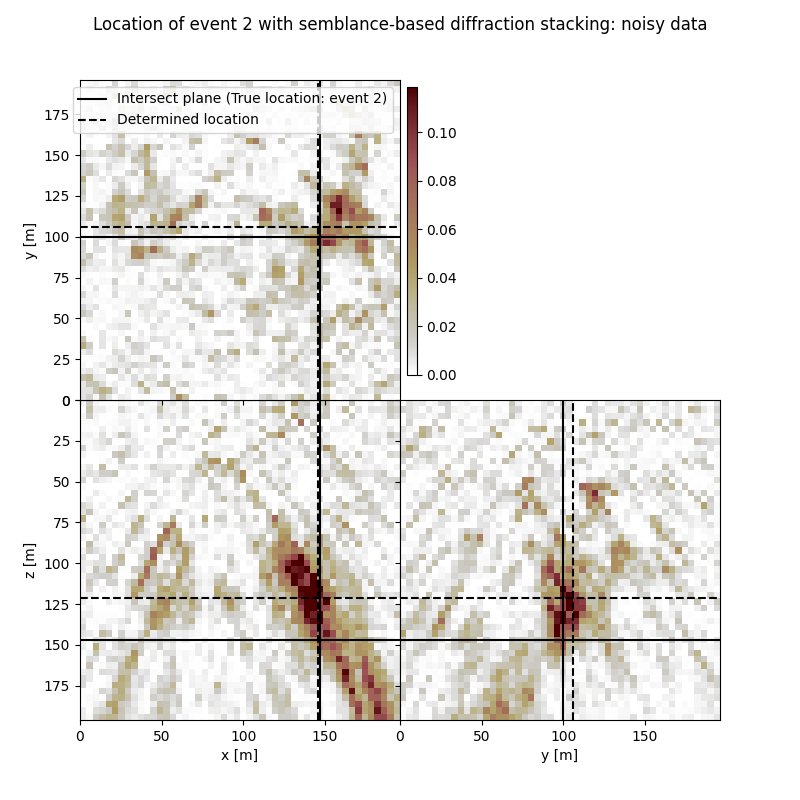
- 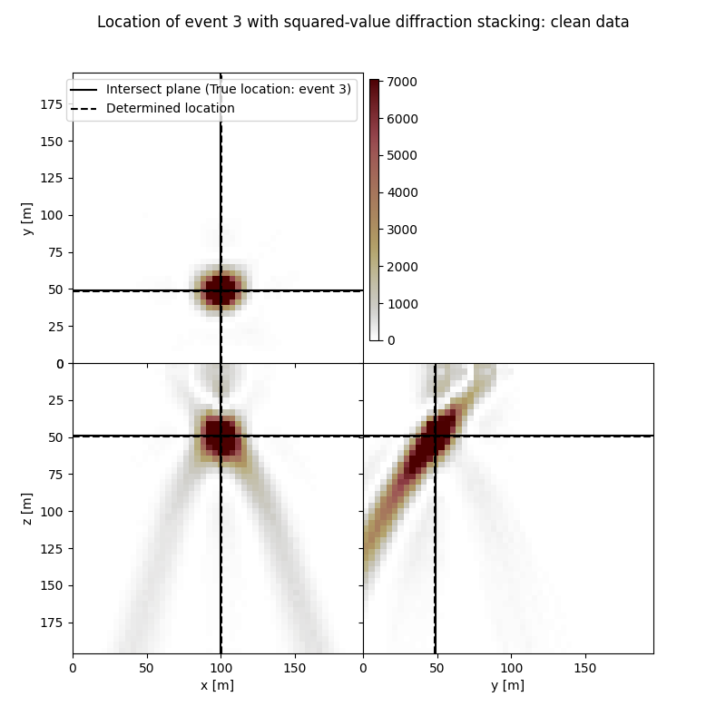
- 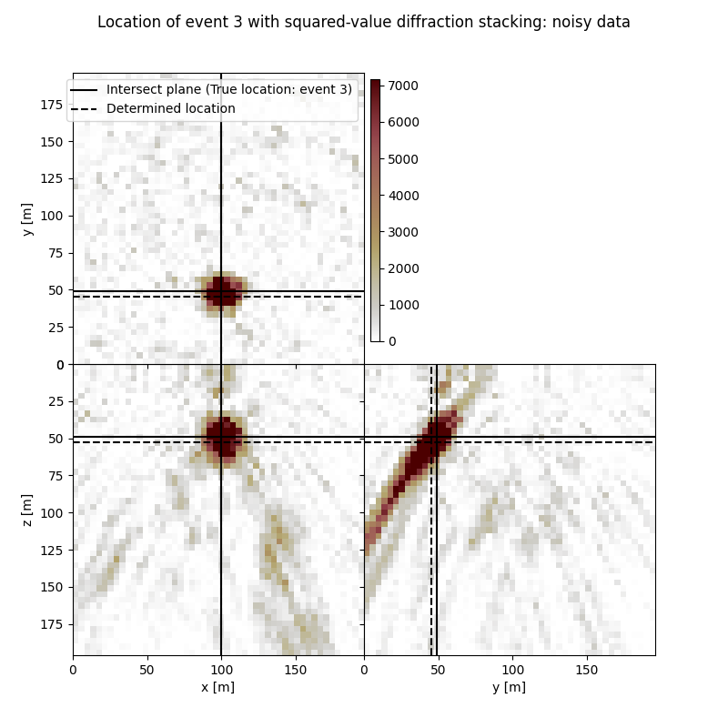
- 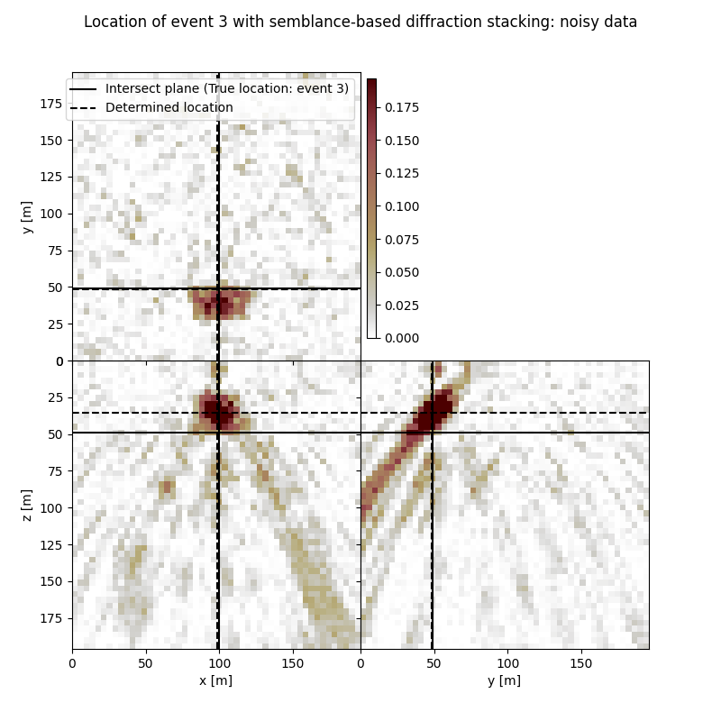
Total running time of the script: (2 minutes 49.261 seconds)